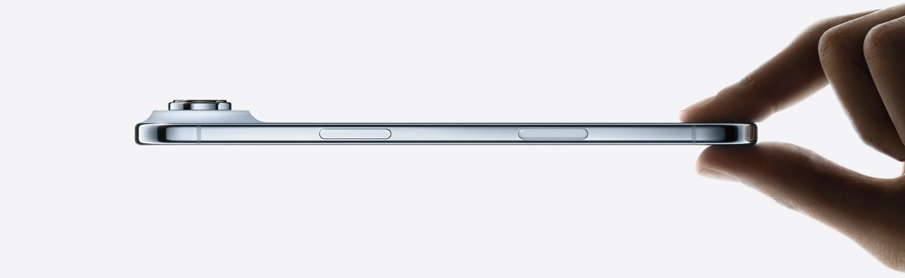

Learn More
A17 Pro chip
Pro performance
Game‑changing performance for everything.
Action button
Do more than ever
The Action button is a fast track to your favorite feature.
Pro camera system
Close‑up and farther out
Get incredible detail with the new camera.
Forged in titanium
iPhone Air
The thinnest iPhone ever. With the power of pro inside.

Privacy
Your data stays yours.
Environment
Made with recycled materials by 2030.
Accessibility
Built‑in features that work .
iPhone 17
Buy 1, get 4 free.

Apple Card
All credit on us. Spend freely.